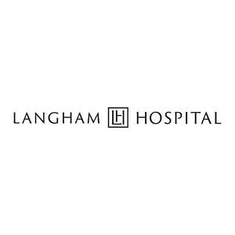

Trade Mark Journal No.2025/022 30 May 2025
UK00004203051 14 May 2025 (44)

- Class 44
- Surgery; Surgery (Cosmetic -); Plastic surgery; Surgery (Plastic -); Plastic surgery services; Cosmetic surgery services; Cosmetic and plastic surgery; Consultancy services relating to surgery; Cosmetic and plastic surgery clinic services; Medical tele-reporting [medical services]; Clinics (Medical -); Medical care; Medical consultations; Medical consultation; Medical information; Medical assistance; Nursing, medical; Medical clinics; Medical screening; Medical services; Medical nursing; Medical examinations; Medical spa services; Clinic (Medical -) services; Medical diagnostic services; Medical analysis services; Medical clinic services; Medical treatment services; Clinic services (Medical -); Medical assistance services; Medical care services; Medical imaging services; Medical advisory services; Medical consultancy services; Medical nursing services; Provision of medical services; Health clinic services [medical]; Medical health assessment services; Medical and healthcare services; Tele-reporting (medical services); Ultrasound services for medical purposes; Providing information relating to medical services; Medical information services provided via the Internet; Services for the provision of medical facilities; Medical services for treatment of the skin; Skin care salons; Laser skin rejuvenation services; Laser skin tightening services; Skin care salon services; Cosmetic laser treatment of skin; Provision of medical facilities; Hospitals; Hospital services; Private hospital services; Medical treatment services provided by clinics and hospitals; Clinics; Medical and healthcare clinics.
Subhaan Inayat